The MLB Launch Angle Debate
by Calvin Koo


Mookie Betts
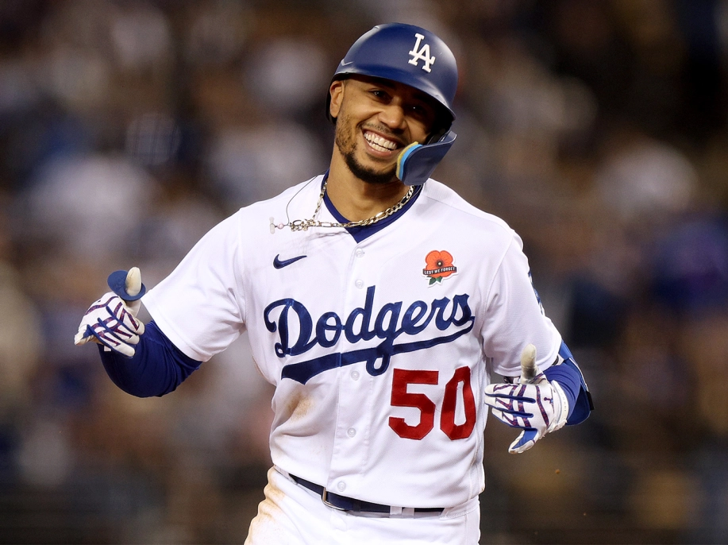
Markus Lynn "Mookie" Betts (born October 7, 1992)
is an American professional baseball right fielder for the Los Angeles Dodgers of
Major League Baseball (MLB). He previously played for the Boston Red Sox. In 2018, while with the Red Sox, he became the first player in MLB history to win the Most Valuable Player, Silver Slugger, Gold Glove, batting title, and World Series in the same season.
Fernando Tatis
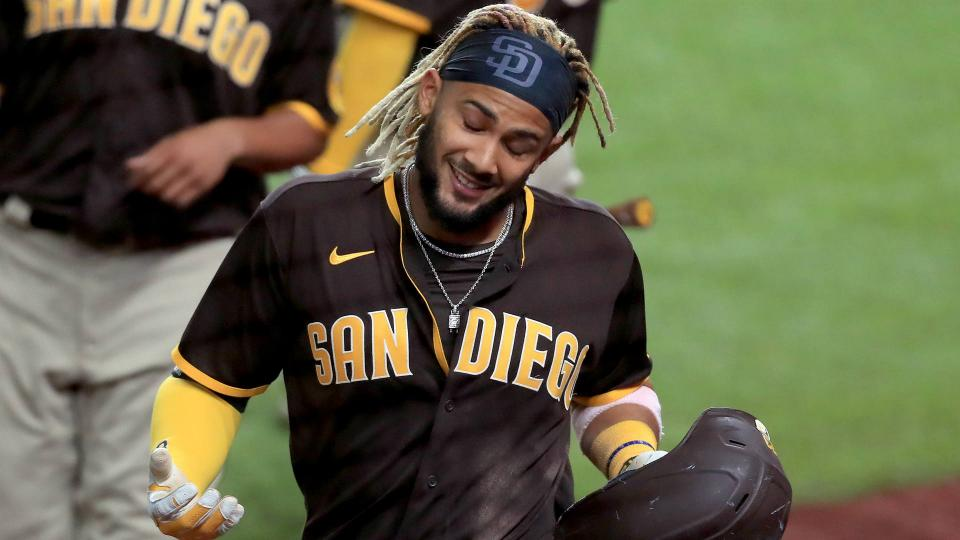
Fernando Gabriel Tatís Medina Jr., nicknamed "El Niño" or "Bebo", is a Dominican professional baseball shortstop and outfielder who plays for the San Diego Padres of Major
League Baseball. He is the son of former MLB player Fernando Tatís Sr.
Tatís Jr. stands 6 feet 3 inches tall and weighs 217 pounds.
Mike Trout
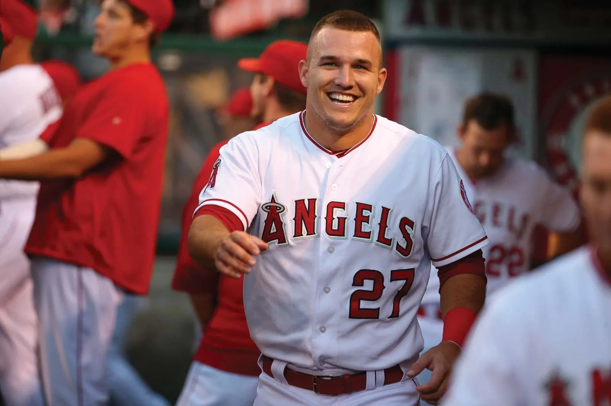
Michael Nelson Trout is an American professional baseball
center fielder for the Los Angeles Angels of Major League Baseball.
Trout is a ten-time MLB All-Star, three-time American League Most Valuable Player,
and is an eight-time winner of the Silver Slugger Award.
Corey Seager
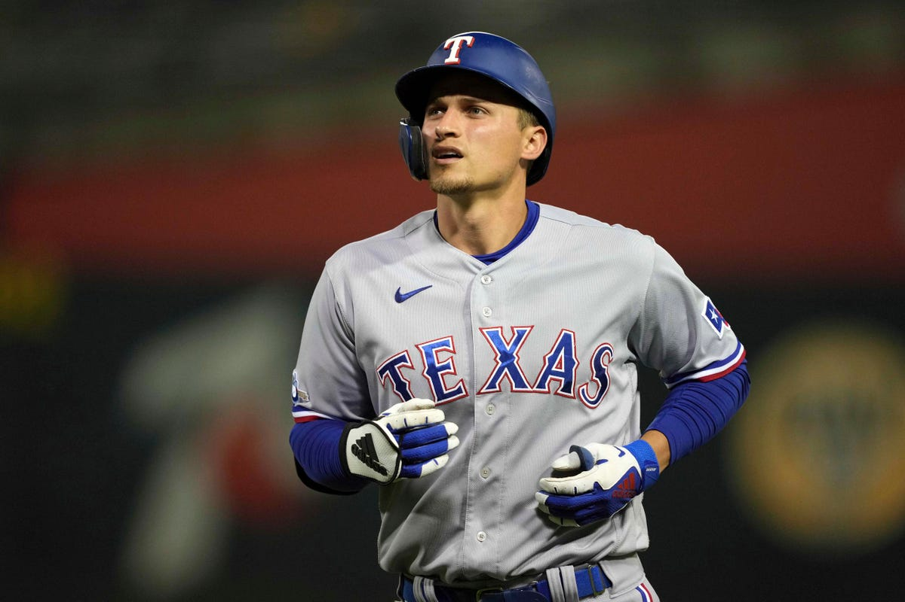
Corey Drew Seager, nicknamed "Seags", is an American professional baseball shortstop for the
Texas Rangers of Major League Baseball. Seager was selected by the Los Angeles
Dodgers in the first round of the 2012 Major League Baseball draft, and he made his major league debut in 2015.
Manny Machado
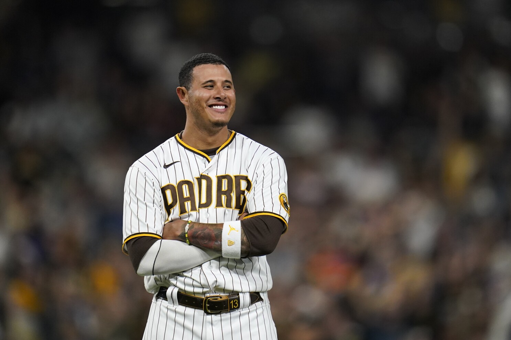
Manuel Arturo Machado is an American professional baseball
third baseman and shortstop for the San Diego Padres of Major League Baseball.
Bryce Harper
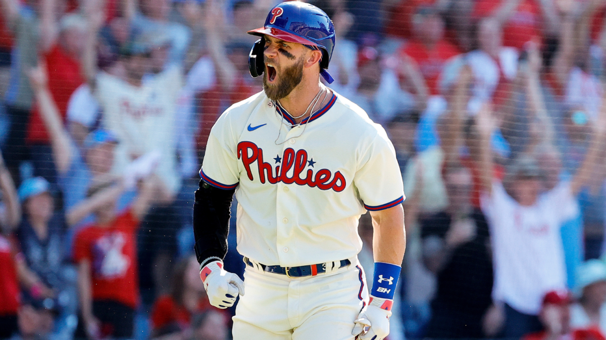
Bryce Aron Max Harper is an American professional baseball right fielder and designated hitter for the Philadelphia
Phillies of Major League Baseball. He played in MLB for the Washington Nationals from 2012 through 2018. He has been touted as a "five-tool player".
Ronald Acuna
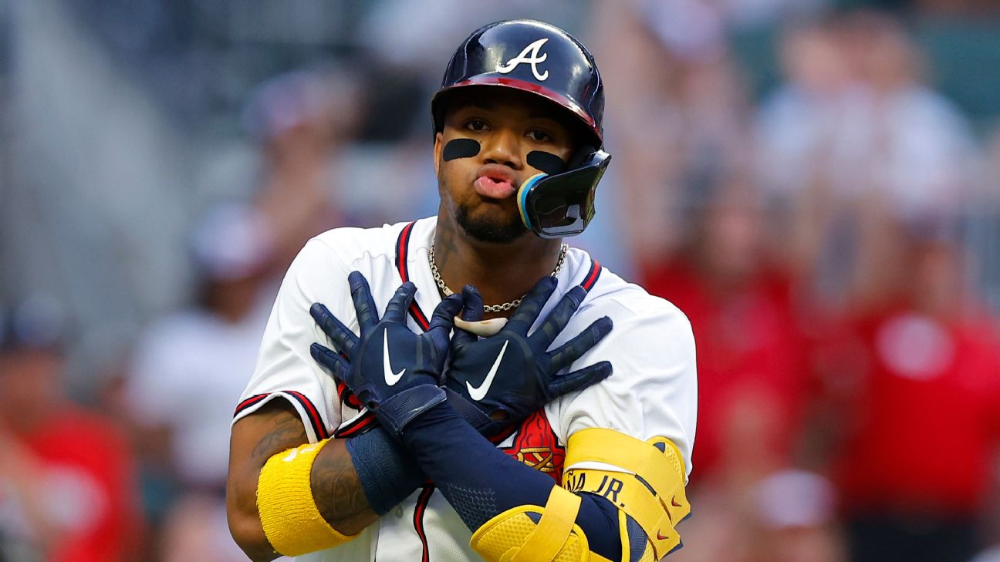
Ronald José Acuña Blanco Jr. is a Venezuelan professional baseball outfielder for the Atlanta Braves of Major League Baseball. He made his MLB debut in 2018, and won the National League Rookie of the Year Award.
Jose Altuve
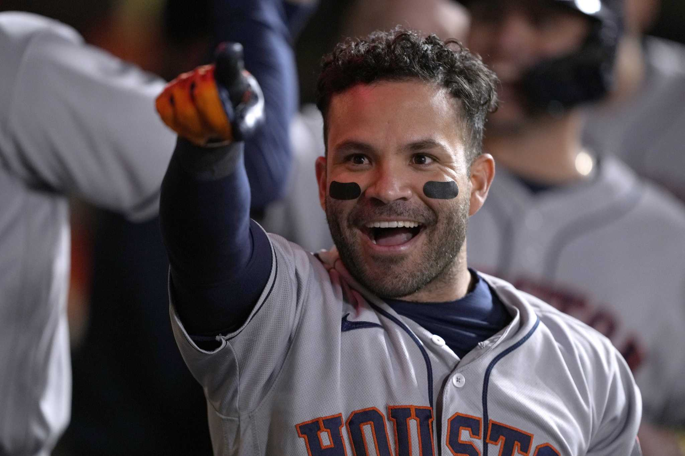
José Carlos Altuve is a Venezuelan professional baseball second baseman for the Houston Astros of Major League Baseball. The Astros signed Altuve as an amateur free agent in 2007, and he made his major league debut in 2011.
Freddie Freeman
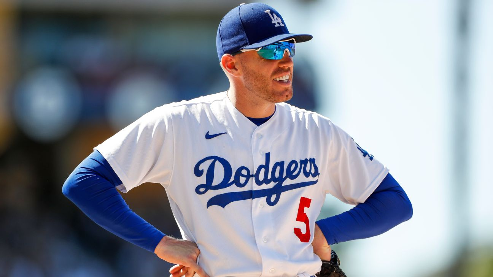
Frederick Charles Freeman is an American professional baseball first baseman for the Los Angeles Dodgers of Major League Baseball. Previously, Freeman played for the Atlanta Braves for 12 seasons. He made his MLB debut in 2010 and is a six-time MLB All-Star.
Jose Ramirez
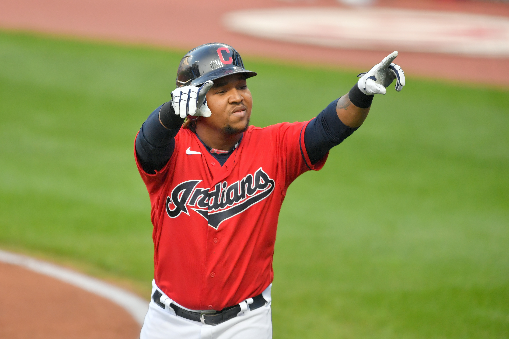
José Enrique Ramírez is a Dominican professional baseball third baseman for the Cleveland Guardians of Major League Baseball. He signed with the Indians as an amateur free agent on November 26, 2009, and made his MLB debut on September 1, 2013.
Justin Turner
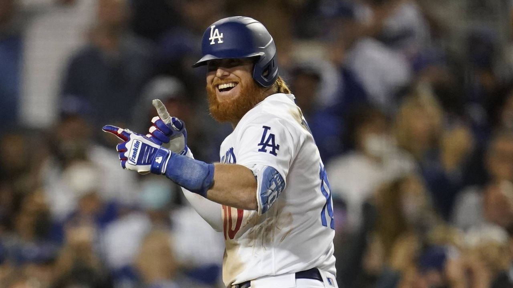
Justin Matthew Turner is an American professional baseball third baseman for the Los Angeles Dodgers of Major League Baseball. He has also played in MLB for the Baltimore Orioles and New York Mets. He played college baseball for the Cal State Fullerton Titans.
Aaron Judge
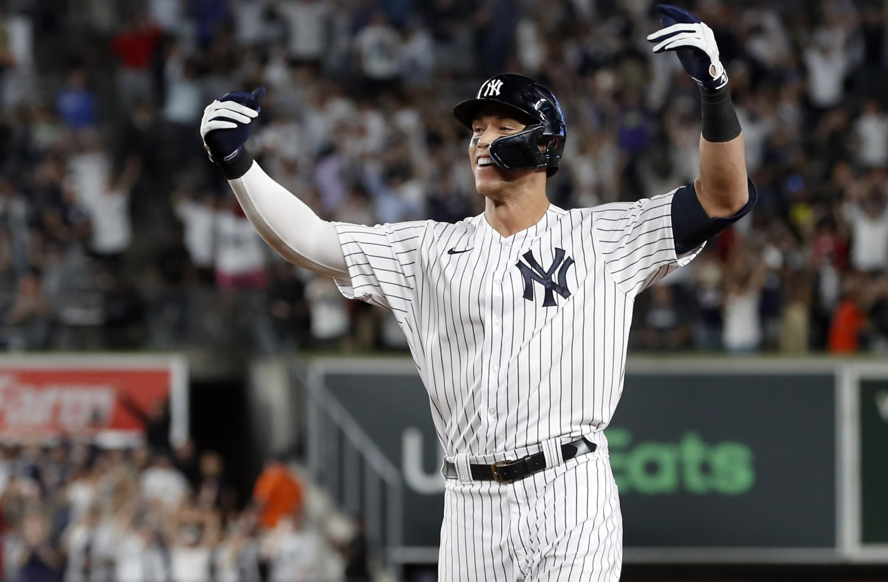
Aaron James Judge is an American professional baseball outfielder for the New York Yankees of Major League Baseball. Judge was unanimously selected as the American League Rookie of the Year in 2017 and finished second in voting for the AL Most Valuable Player Award.
Shohei Ohtani
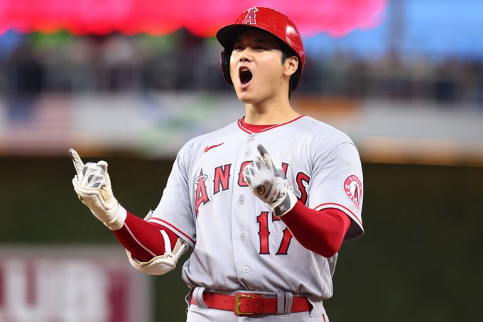
Shohei Ohtani, nicknamed "Shotime", is a Japanese professional baseball pitcher, designated hitter and outfielder for the Los Angeles Angels of Major League Baseball. He previously played for the Hokkaido Nippon-Ham Fighters of Nippon Professional Baseball's Pacific League.
Juan Soto
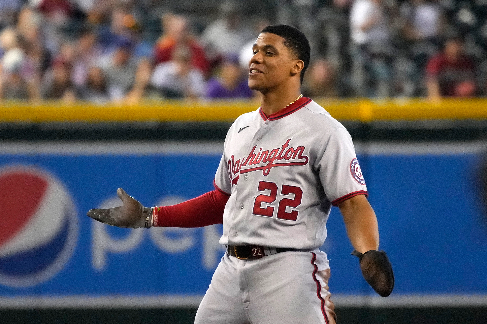
Juan José Soto Pacheco, nicknamed "Childish Bambino", is a Dominican professional baseball outfielder for the Washington Nationals of Major League Baseball. Soto signed with the Nationals as an international free agent in 2015. He made his MLB debut in 2018 and was the runner-up for the NL Rookie of the Year Award.
Joey Votto
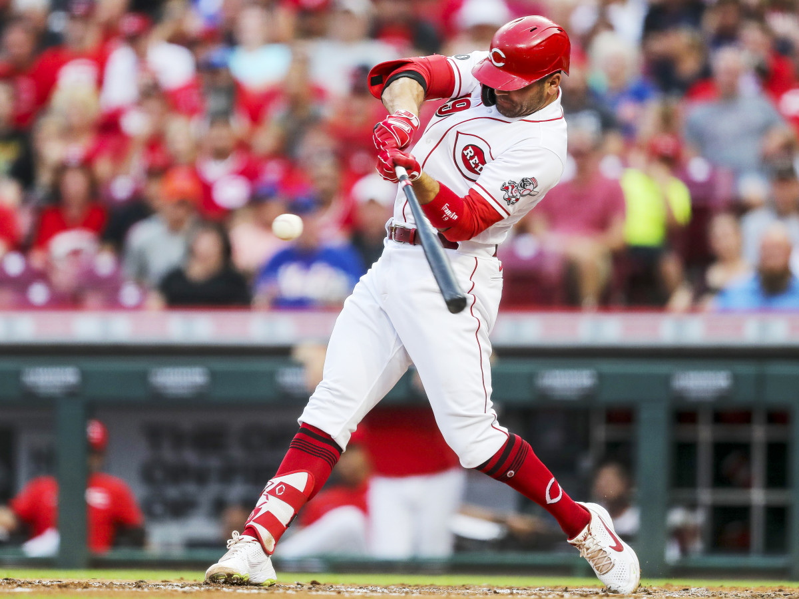
Joseph Daniel Votto is a Canadian-American professional baseball first baseman for the Cincinnati Reds of Major League Baseball. He made his MLB debut with the Reds in 2007. He is the first Canadian MLB player since Larry Walker to hit 300 home runs and have 1,000 career runs batted in.